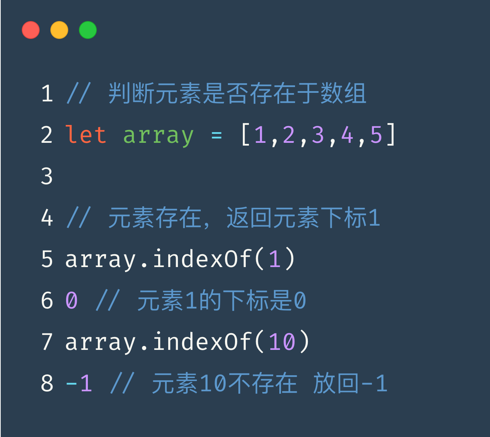
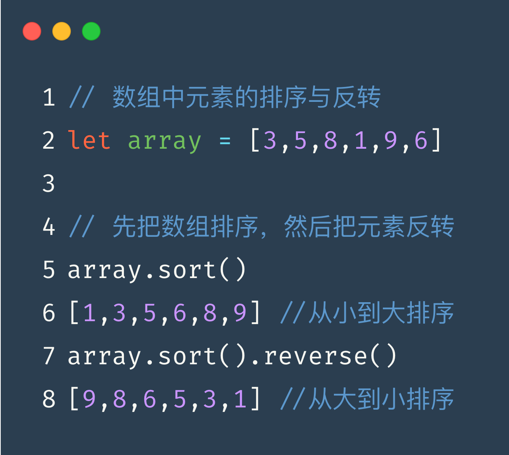
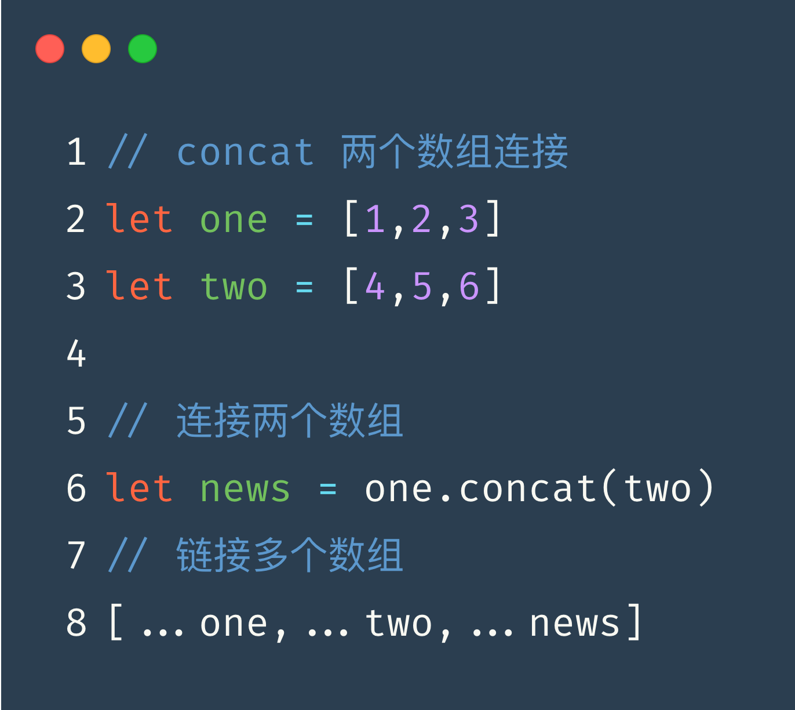
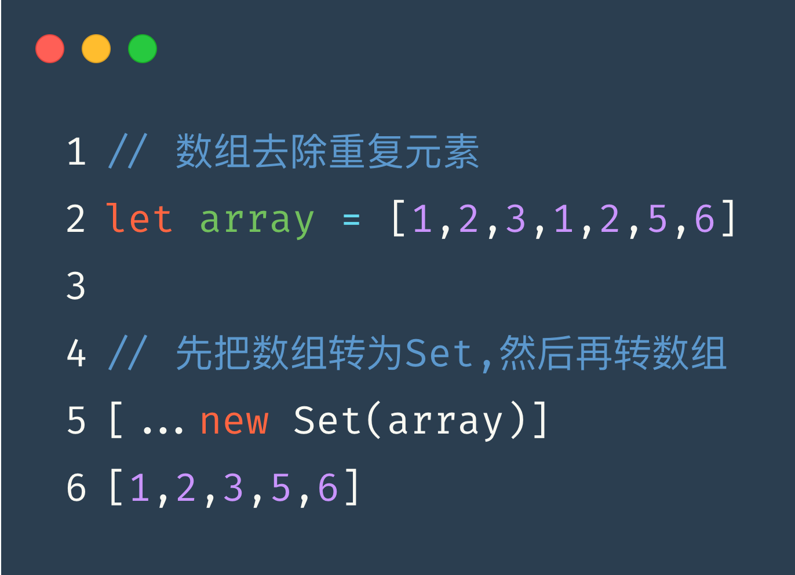

// 判断元素是否存在于数组
let array = [1,2,3,4,5]
array.indexOf(1)
0
array.indexOf(10)
-1

// 数组中元素反转
let array = [3,5,8,1,9,6]
// 先把数组排序，然后把元素反转
array.sort().reverse()
[9,8,6,5,3,1]

// concat 两个数组连接
let one = [1,2,3]
let two = [4,5,6]
let news = one.concat(two)
[1, 2, 3, 4, 5, 6]

// 数组去除重复元素
let array = [1,2,3,1,2,5,6]
// 先把数组转为Set,然后再转数组
[... new Set(array)]
[1,2,3,5,6]
